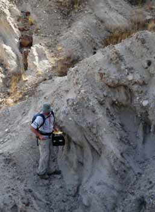

David LoBue
M.S., The University of Kansas, 2010
Dissertation Title
Ichnotaxonomic Assessment of Mazon Creek Area Trace Fossils, Illinois, USA
Publications
LoBue, D. and Hasiotis, S. T., 2007. Neoichnological study of the turtle Sternotherus odertus trackways. North-central–South-central Geological Society of America Section Meeting, Lawrence, Kansas, 12 April, 1 p.